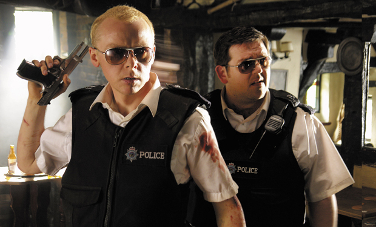
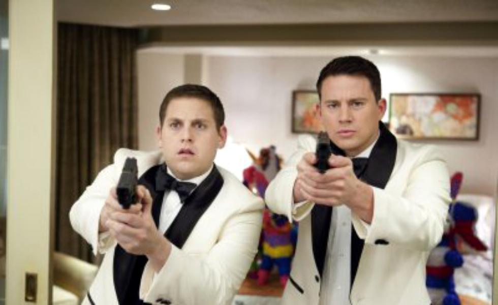
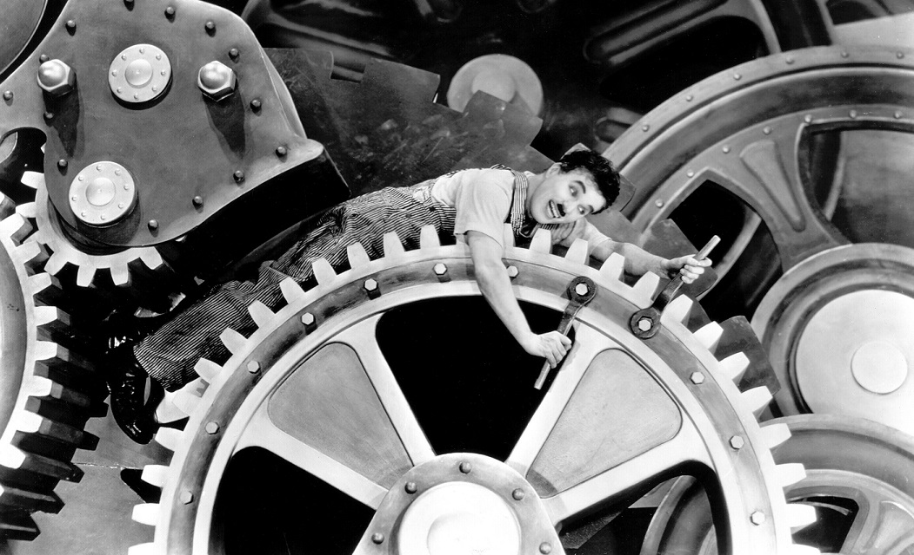

Filmele de comedie
Descriere
Filmul de comedie este un gen de film în care accentul principal se pune pe umor. Aceste filme sunt concepute pentru a obține râsul din partea audienței, pentru a amuza și distra publicul. Filmul de comedie prezintă situații exagerate special pentru a provoca râsul, diferite tipuri comice de vorbiri, de acțiuni și de personaje. Filmele de comedie, de regulă, au un final fericit (cu excepția filmelor de comedie neagră). Este cel mai vechi gen de film. Primele filme erau fără sunet, bazându-se în mare parte pe reprezentările vizuale.
Poze:

Hot Fuzz, regizat de Edgar Wright

21 Jump Street, regizat de Phil Lord si Christopher Miller

Modern Times, regizat de Charlie Chaplin